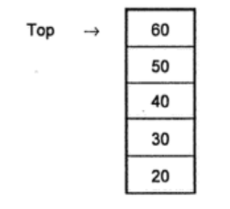
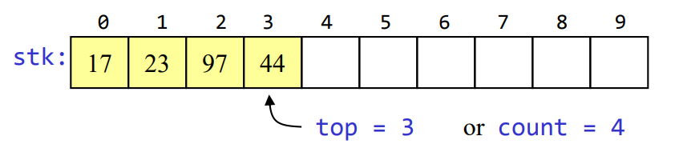
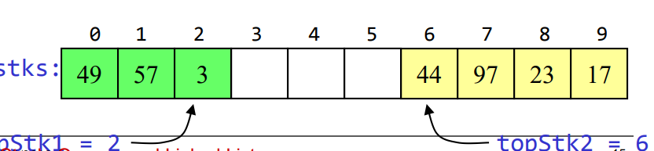
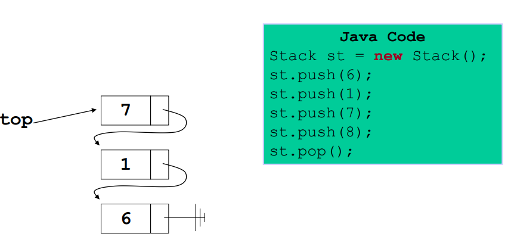
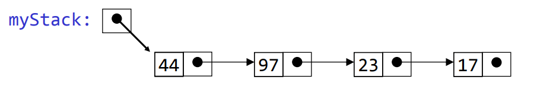
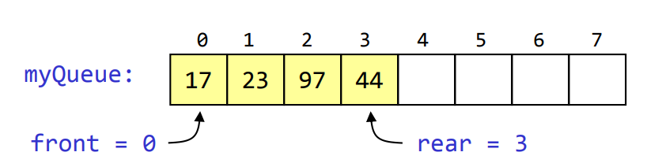
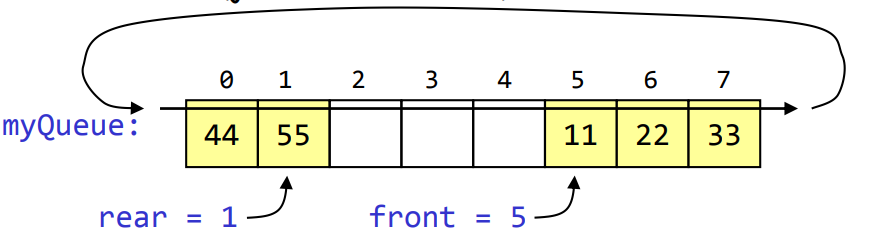
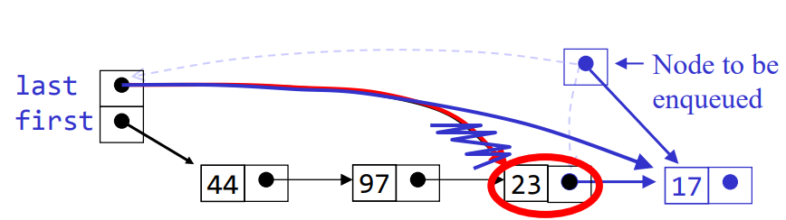
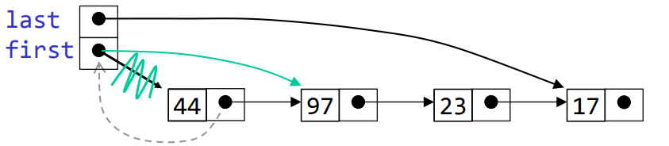

A stack is an ordered list in which all insertions and
deletions are made at one end called the top.
If we have to make a stack of elements 20, 30, 40, 50, 60
then 20 will be the bottommost element and 60 will be the
topmost element in the stack.

It uses the Last In First Out or ‘LIFO’
The operations which can be carried out
on the stack. The operations are as follows:
Stack(): - creates a new stack that is empty. It needs no
parameters and returns an empty stack.
push(item): -adds a new item to the top of the stack. It
needs the item and returns nothing.
pop(): - removes the top item from the stack. It needs no
parameters and returns the item. The stack is modified.
peek(): - returns the top item from the stack but does not
remove it. It needs no parameters. The stack is not
modified.
is_empty():- tests to see whether the stack is empty. It
needs no parameters and returns a Boolean value.
size():- returns the number of items on the stack. It needs
no parameters and returns an integer.
There are 2 major ways to implement a stack
array
linked list
Advantages
best performance,and efficient
Disadvantage
fixed size
Basic implementation
initially empty array
field to record where the next data gets placed into
if array is full, push() returns false
otherwise adds it into the correct spot
if array is empty, pop() returns null
otherwise removes the next item in the stack

Below are algorithms of the main operations.Note: when top = -1 means the stack is empty.
int A[10]
int top := -1
push(x){
top := top +1
A[top] := x
}
pop(){
top := top - 1
}
isEmpty(){
if(top ==-1){
return true
}else return false
}
peek(){
return A[top]
}
Space sharingis done to allow two stacks to share the
same storage area.

There are two stack errors that can occur:
Underflow: trying to pop (or peek at) an empty stack and
Overflow: trying to push onto an already full stack
Using linked lists
(singly linked list)
Advantages:
always constant time to push or pop an element
can grow to an infinite size
Disadvantages
The common case is the slowest of all the
implementations
Can grow to an infinite size
Basic implementation
list is initially empty
push() method adds a new item to the head of the
list
pop() method removes the head of the list
after pop

Since all the action happens at the top of a stack, a
singly-linked list (SLL) is a fine way to implement it.
The header of the list points to the top of the stack
Pushing is inserting an element at the front of the
list
Popping is removing an element from the front of
the list
With a linked-list representation, overflow will not happen
Underflow can happen, and should be handled the same way
as for an array implementation
When a node is popped from a list, and the node references
an object, the reference (the pointer in the node) does not
need to be set to null
Unlike an array implementation, it really is removed--you
can no longer get to it from the linked list
Hence, garbage collection can occur as appropriate

It is an ordered group of homogeneous items of elements.
Queues have two ends:
Elements are added at one end called the rear .
Elements are removed from the other end called the front.
The element added first is also removed first (FIFO: First
In, First Out).
A queue is structured as an ordered
collection of items which are added at one
end, called the “rear,” and removed from the
other end, called the “front.”
The queue operations are given below.
Queue(): creates a new queue that is empty. It needs
no parameters and returns an empty queue.
enqueue(item):adds a new item to the rear of the
queue. It needs the item and returns nothing.
dequeue(): removes the front item from the queue.
It needs no parameters and returns the item. The
queue is modified.
is_empty(): tests to see whether the queue is empty.
It needs no parameters and returns a Boolean value.
size(): returns the number of items in the queue. It
needs no parameters and returns an integer.
This is accomplished by inserting at one end (the rear) and
deleting from the other (the front).
In the example below..:

To insert: put new element in location 4, and set rear to 4
To delete: take element from location 0, and set front to 1
Algorithm for basic operations in stacks:
Int A[10]
front := -1 // empty queue
rear := -1
isEmpty(){
if front ==-1 && rear ==-1
return true
else return false
}
Enqueue (){
if isFull()
return
else if isEmpty()
front := rear := 0
A[rear] := x
else
rear := rear +1
A[rear] := x
}
Dequeue(){
if isEmpty()
return
else if front == rear //only one element in the queue
front:= rear:=-1
else
front := front+1
}
Circular arrays
The concept of circular queue, has the main advantage of
utilizing the space of the queue fully. as shown below

Elements were added to this queue in the order
11, 22, 33, 44, 55, and will be removed in the same
order
Allocate memory for each new element dynamically
Link the queue elements together
Use two pointers, qFront and qRear, to mark the front and
rear of the queue
Enqueueing a node
To enqueue (add) a node:
Find the current last node
Change it to point to the new last node
Change the last pointer in the list header

Dequeue a node
To dequeue (remove) a node:
Copy the pointer from the first node into the header

if you observe the list at each operation, you will notice that the queue is circular. null stands for a rempved item